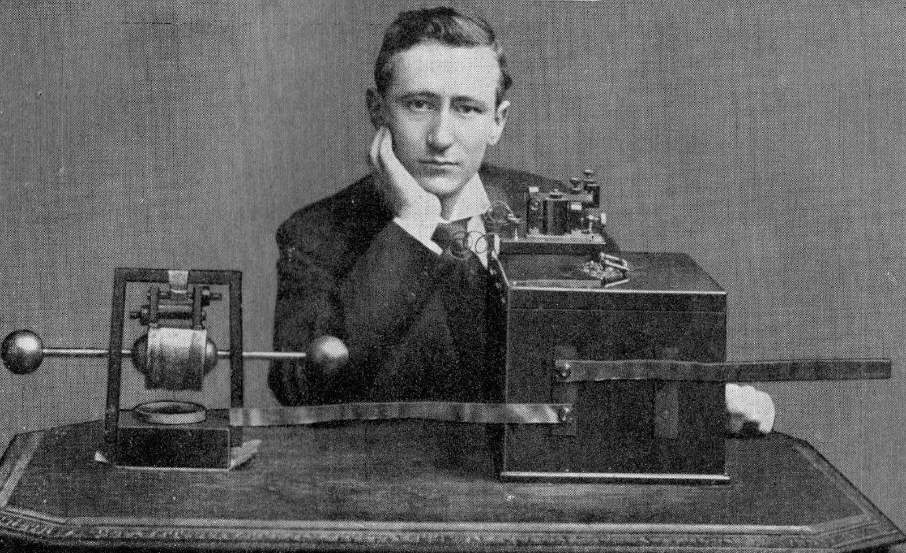

Guglielmo Marconi was an Italian inventor, famous for contributing to the invention of the wireless telegraphy. Born in Bologna, Marconi's birth date was the 25th of April 1874, and he died at the age of 63, on the 20th of July 1937, in Rome. He won a noble prize in physics, an IEEE medal of honor, and a John Fritz medal. He had 6 children.
